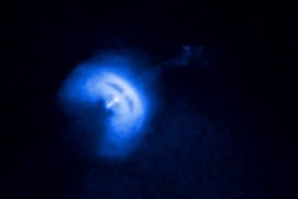

Sagittarius A*

- Distance from Earth: Approximately 26,000 light-years
- Type: Supermassive black hole
- Key Features: Located at the center of the Milky Way galaxy, Sagittarius A* has a mass equivalent to about 4.1 million suns. Its presence is inferred from the orbits of nearby stars, which move rapidly around an unseen object. Research continues to uncover more about this enigmatic black hole.
- Fun Fact: In 2018, astronomers captured the first-ever image of a black hole’s event horizon, providing visual evidence of these mysterious objects!
M87 Black Hole

- Distance from Earth: About 53 million light-years
- Type: Supermassive black hole
- Key Features: The M87 black hole became the first black hole to be imaged in 2019, revealing a shadow surrounded by a glowing accretion disk. This groundbreaking achievement marked a significant milestone in astrophysics and enhanced our understanding of black holes.
- Fun Fact: The image of the M87 black hole was created using data from a network of radio telescopes across the globe, known as the Event Horizon Telescope!
Cygnus X-1

- Distance from Earth: Approximately 6,000 light-years
- Type: Stellar black hole
- Key Features: One of the first black hole candidates identified, Cygnus X-1 is part of a binary star system. It emits X-rays as material from its companion star is drawn into it. This system provides valuable insights into the formation and behavior of black holes.
- Fun Fact: Cygnus X-1 was famously debated by physicist Stephen Hawking and fellow scientist Kip Thorne, with Hawking arguing against its existence in the early days of black hole research!
Crab Pulsar (PSR B0531+21)

- Distance from Earth: Approximately 6,500 light-years
- Type: Pulsar (a type of neutron star)
- Key Features: The Crab Pulsar is the remnant of a supernova explosion, emitting beams of radiation detectable as pulses. It rotates rapidly, providing insights into the physics of neutron stars and the processes occurring in supernova remnants.
- Fun Fact: The Crab Pulsar rotates at an astonishing rate of about 30 times per second!
Vela Pulsar (PSR B0833-45)
- Distance from Earth: About 1,000 light-years
- Type: Pulsar (a type of neutron star)
- Key Features: The Vela Pulsar is a well-studied pulsar that emits radio waves and is associated with the Vela supernova remnant. Its regular pulse offers insights into the behavior of neutron stars and the conditions present in their formation.
- Fun Fact: The Vela Pulsar was one of the first pulsars discovered, leading to the identification of other similar objects!